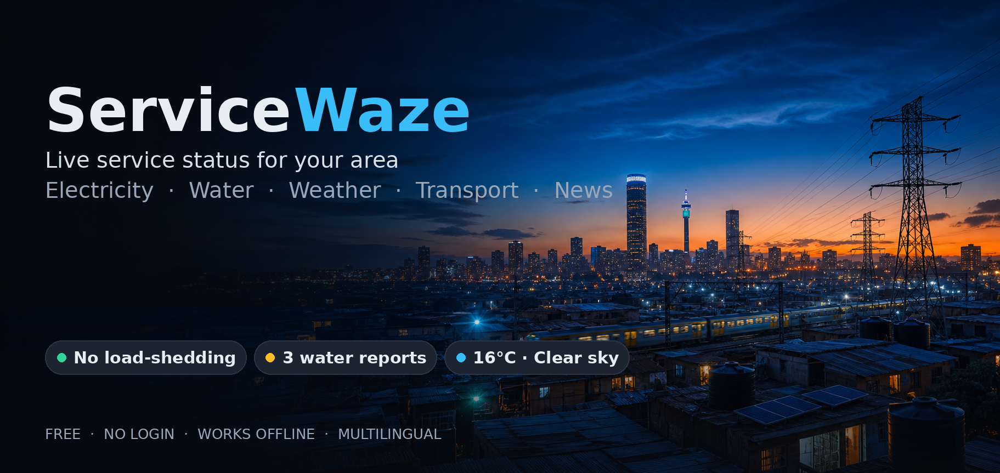
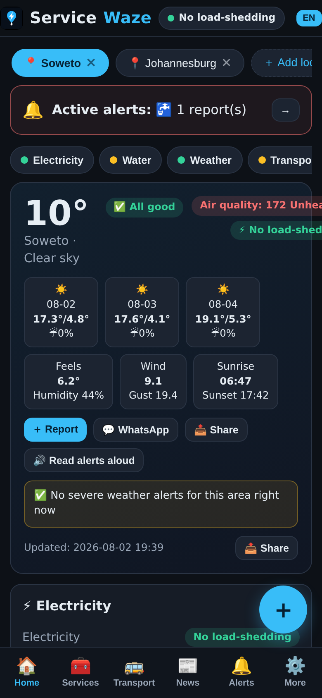
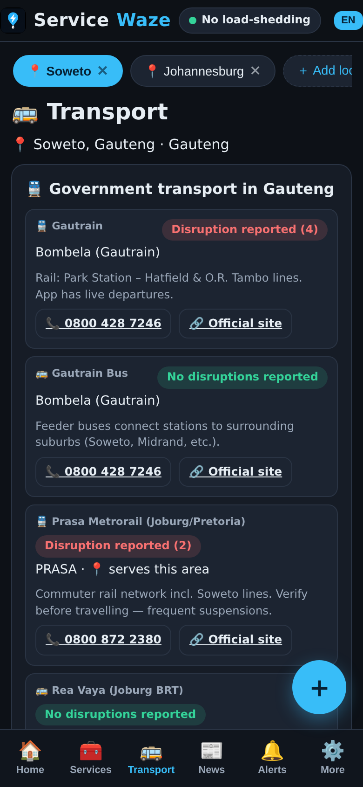
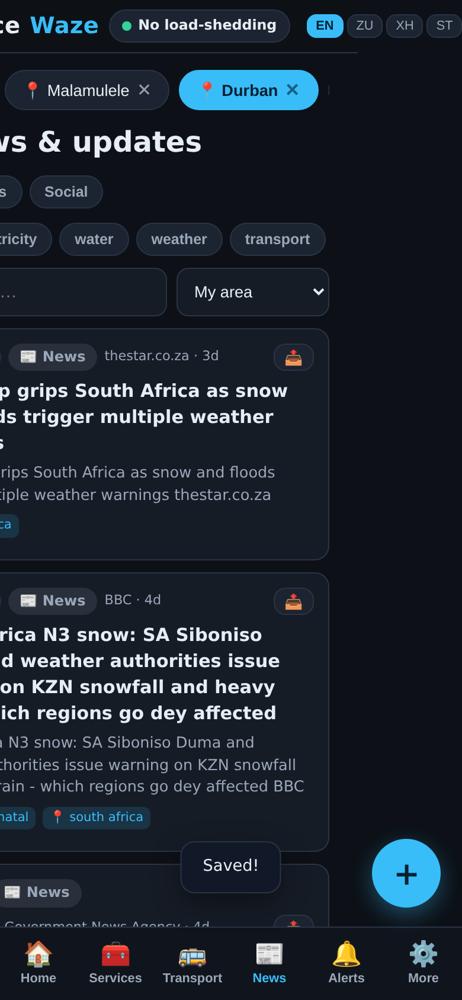
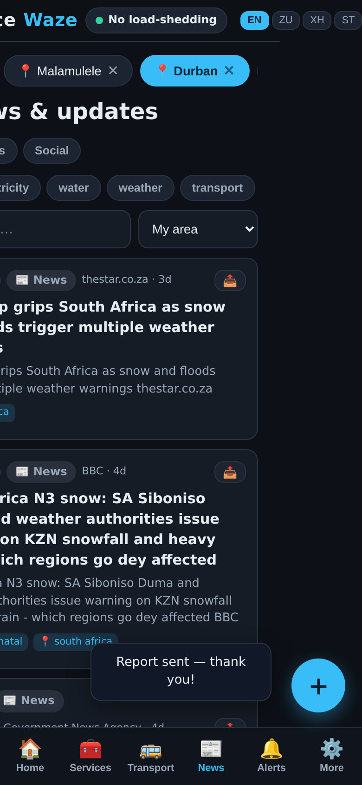
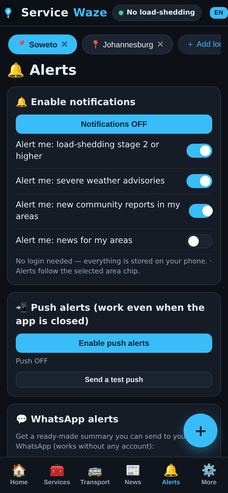

The product
Pick the street, not the country.
A national dashboard tells you the grid is at stage zero and leaves you there. ServiceWaze starts one level lower — the suburb. Search a suburb or tap one that is on tonight's board, and every screen answers for that place: the burst pipe in Alexandra, the do-not-use-tap-water notice in Bezuidenhout Valley, the partial restoration in Honeydew.
⚡ Electricity
Eskom GetStatus for the country, then the local reality: City Power faults, metro utility status and what it means for your area.
🚰 Water
Reservoir levels, burst pipes, quality notices — with plain-language actions ("do not use the taps") instead of a code list.
🌤️ Weather & air
Current conditions, three-day forecast, wind, sunrise and air quality for the metros — Cape Town AQI 138 at 22:00 is a headline, not a footnote.
🚌 Transport
Gautrain, Gautrain Bus, Prasa Metrorail and Rea Vaya with live disruption counts, phone numbers and official sites.
📰 News
Electricity, water, weather and transport news filtered by topic and area — in English, isiZulu, Xhosa and Sesotho.
🔔 Alerts
Notifications for stage 2+ load shedding, severe weather, community reports and news. Push works even when the app is closed, plus a WhatsApp summary.



The challenge
The national feed is not your feed.
Load shedding ended nationally in 2025 — and for the people ServiceWaze is built for, the problem got smaller in geography and harder to find. Water boards, City Power, metro utilities and transport agencies each publish in their own place, in their own format, at their own pace.
- A burst pipe in Alexandra is invisible on a national dashboard that says "all clear".
- A water quality notice in Bezuidenhout Valley lives on a suburb page nobody bookmarks.
- Nineteen Joburg reservoirs on bypass and Lawley running low — the detail is published, buried and dated by morning.
- The people most affected are least likely to own a data plan, a car or an English-only interface — and most likely to need the answer on a phone, offline.
- Headlines are not data: a News24 line about Sandton meter closures is a claim until the article body says so. The product had to know the difference.
The goal
Answers at suburb level, for free.
The bar: a resident of any covered suburb should get the same answer their municipality gives — faster, in their language, on a phone that works offline. No account, no subscription, no fine print.
The solution
Scrape the officials, design for the street.
- An area chip instead of a login: Soweto, Johannesburg, Malamuule, Durban — add as many suburbs as you live in, and every screen follows the selected chip.
- Honest scraping: the board states exactly what was pulled and when — "Eskom GetStatus = 1, which means stage 0", "19 Joburg reservoirs on bypass, Lawley running low" — and it says when it did not scrape. Bryanston cleared on its own page, so it's not shown as an outage; a headline-only story stays a headline.
- Actions, not just status: each item comes with what to do — "do not use the taps", the number to call, the official site — plus a one-tap community report that feeds the next board.
- Alerts that respect the phone: notification toggles per stream, push that works with the app closed, and a ready-made WhatsApp summary you can forward to the family group.
- Offline-first PWA: installable, cached, readable on a mid-range phone on a patchy signal — the network the alerts are about is the same network that may be down.


The process
How a public board gets built.
Map the sources
Eskom GetStatus, City Power, Joburg Water, reservoir dashboards, Open-Meteo, transport agencies — each with its own format, cadence and failure mode.
Draw the board
One screen per suburb, five streams, status colour everyone understands. The area chip replaced the login on the second sketch.
Write the scraper
Each source gets a puller with its own timestamp and confidence rule. Headlines are claims; scraped bodies are facts. The board shows the difference.
Localise
isiZulu, Xhosa and Sesotho from day one — "read alerts aloud" included, because some of the most important alerts should be heard, not read.
Ship the PWA
Installable, offline-cached, push-enabled. Then watch the board fail in the wild and fix the pullers that break first.
Where it stands
Live, and reading the board.
ServiceWaze is live — a real night on the board, as the product reports it:
- Scraped at 22:40 SAST: Eskom GetStatus = 1 (stage 0), Alexandra burst pipe isolated with no published restoration time, Bezuidenhout Valley quality notice still active, 19 Joburg reservoirs on bypass, 20 City Power outages including a partial Honeydew restoration.
- Weather and air for the metros from Open-Meteo — Cape Town AQI 138 at 22:00, flagged on the board, not hidden in a widget.
- The honesty test: Bryanston was on the water index and cleared on its own page, so it's off the board. Sandton meter closures are a News24 headline only, so they're reported as such.
- Community reports and the hotline directory keep the loop closed: the board tells you what's wrong, what to do, and what it costs to fix — including the number to dial.
Open the live site — search a suburb, tap it, and see exactly what was scraped, from where, and when.
Key takeaways
What I'd tell the next team.
Granularity is the product
The national feed answers for the country. The suburb chip answers for the person. Most "civic" products stop a level too high.
Cite the scrape
Timestamp every pull and state the source on the board. A status board that can't say where it looked is just a rumour with better typography.
Status without actions is noise
"Do not use the taps" and "call 0860 562 874" are the design. The icon is decoration.
Offline is a feature, not a fallback
The utility that's down is often the connection. The PWA has to answer in the dark.
Language is access
EN · ZU · XH · ST in a header switcher is cheap to build and the difference between "information" and "usable".
Free and no-login is a trust decision
Utility status is public information. A paywall on a water outage is a brand decision, not a business one.
Building a public-facing, real-time product?
I design and build: the scrapers, the boards, the PWA and the localisation — one pair of hands, end to end.
Start a conversation See how I work